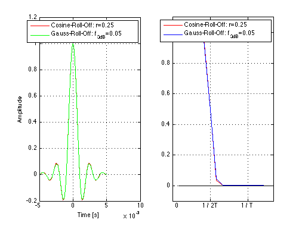

Gaussian Pulse vs. Cosine Roll-Off Pulse
Copyright 2007 Telecommunications Lab
Fs = 500000; % Sampling frequency 500000 Hz T = 1/1000; % Symbol time interval [s]. t = -5*T:1/Fs:5*T; % Time vector (sampling intervals) t = t+0.00000001; % Otherwise, the denominator would be zero at t=0 f= 0:1/Fs:2; alpha = 0.25; % Cosine Roll-off factor f3db=0.05; % Gauss Roll-off factor % Impulse responses p = (sin(pi*t/T)./(pi*t/T)).*(cos(alpha*pi*t/T)./(1-(2*alpha*t/T).^2)); g = (sin(pi*t/T)./(pi*t/T)).*(exp(-(2/log(2))*(pi*f3db*t/T).^2)); %Plotting subplot(1,2,1);plot(t,p,'r',t,g,'g','LineWidth',1.5);hold on;grid on;xlabel('Time [s]');ylabel('Amplitude'); legend('Cosine-Roll-Off: r=0.25','Gauss-Roll-Off: f_{3dB}=0.05'); % Transfer functions P=abs(fft([p zeros(1,1024-length(p))])); G=abs(fft([g zeros(1,1024-length(g))])); %Plotting subplot(1,2,2);plot(P/max(P),'r','LineWidth',1.5);hold on;plot(G/max(G),'b','LineWidth',1.5);hold on; legend('Cosine-Roll-Off: r=0.25','Gauss-Roll-Off: f_{3dB}=0.05'); hold on; axis([0 16 -.1 1.1]); set(gca,'XTick',[0:6:16]); set(gca,'XTickLabel',[' 0';'1 / 2T';'1 / T ';' ';' ';' ';' ']) f(1:length(G(1,:)))=0; line(1:length(f),f,'color','k'); grid on; f(1:length(P(1,:)))=0; line(1:length(f),f,'color','k'); grid on; hold off;